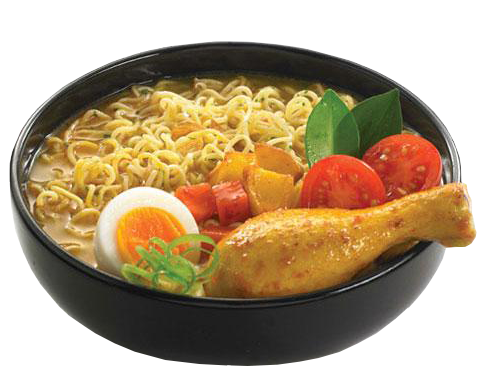

Indomie Soup

Description
Indomie Soup is one of the easiest foods you can make. It only takes around 10-20 minutes to prepare so it is perfect for a busy lifestyle.
Ingredients
- small packet of Indomie noodles
- 1 egg
- vegetables (carrot, bell pepper, zucchini)
- bread
Steps
- Heat water (it shouldn't be too small)
- Put the Indomie with the spices and oil that are included in the packet inside your eating bowl
- cut your vegetable into long stripes and put it inside your eating bowl
- Pour boiling water on the Indomie and close it with a lid or a plate
- Now, open an egg into a laddle. Carefully put the laddle into the remaining boiling water in the pot. Try to remove the laddle.
- After 2 minutes, use the laddle to get out the egg from the pot. Put the egg inside the eating bowl and wait until the Noodles are ready to be eaten
- Enjoy your meal with some slices of bread.